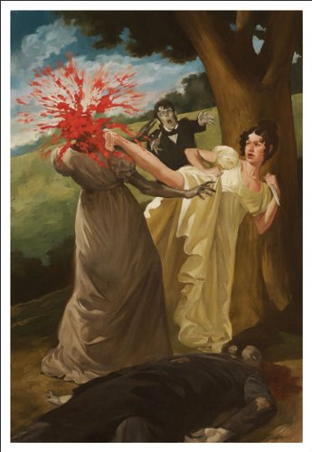
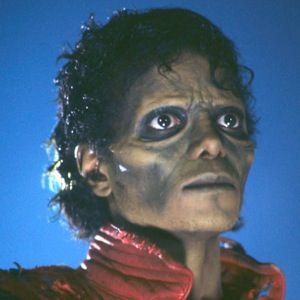
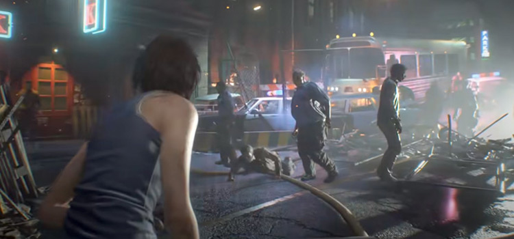
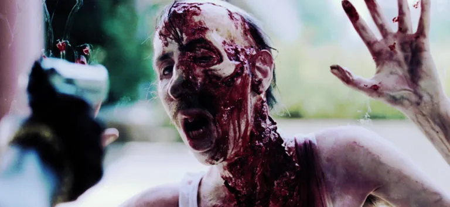

Though a definitive mythology of the origin of zombies isn't entirely clear, these ghastly ghouls - in some form or variation - have been a part of the Western literary tradition for centuries. Mary Shelley's 1818 Frankenstein introduced the idea of harvesting body parts of the dead, and in H.P. Lovecraft's Herbert West: Re-animator (1921), a doctor concocts a potion that revives corpses. According to an article in Time magazine in 1940, the word "zombi" - which probably comes from the Kongo word Nzambi, the name of an African voodoo snake-deity - didn't crop up in American literature until W.B. Seabrook's book The Magic Island, in 1929. (Coincidently, this is the same book that inspired Victor Halpern's 1932 horror film, White Zombie, starring Bela Lugosi.)
In 1954 - just nine years after the detonation of two atomic bombs in Japan - Richard Matheson penned I Am Legend, a novel that helped introduce themes of post-apocalyptic strife to traditional zombie literature. The novel was adapted to film with The Last Man on Earth (1964), The Omega Man (1971), and I am Legend (2007), and was part of the inspiration behind George A. Romero's 1968 cult classic, Night of the Living Dead.
Zombies in Literature
Over the decades, as technology evolved, zombie literature began to reflect more modern times; authors started to incorporate the advancements of the 21st century into their stories. For example, master horror novelist Stephen King's Cell (2006), supposes cellular technology to be the germ that infects innocents, transforming them into the living dead.
Then in 2009, a surprising extension of the genre came along - the "mash up." Launched by the astonishing popularity of Seth Grahame-Smith's Pride and Prejudice and Zombies, mash up novels usually include the full text of an original classic novel, and are supplemented by the author's contributed zombie storyline. A whole slew of these books now exist, spinning off classics by iconic authors such as Mark Twain, Leo Tolstoy, and Louisa May Alcott, delighting some readers while completely mystifying others.
Zombies in Music
The world of music has always had space for the undead, particularly when it comes to rock and metal. Besides the aforementioned White Zombie (and the doesn’t-really-fit-the-name ’60s psych band, The Zombies), there are undead-themed bands like Send More Paramedics and the Shai Hulud spin-off Zombie Apocalypse. Songs like Necrophagia’s Embalmed Yet I Breathe, Cannibal Corpse’s Evisceration Plague and Obituary’s Slowly We Rot tell macabre metal tales of torn flesh and exposed entrails. Michael Jackson’s 1983 video for Thriller features zombies by the dozen, and is clearly about horror films rather than thrillers. And, of course, there’s The Cranberries’ mega-hit Zombie, which isn’t about zombies but is named after one.
Zombies in Video Games
Quicksilva's Zombie Zombie, released on the ZX Spectrum in 1984, is credited with being the first video game to feature zombies. There wasn't a whole lot of depth (if the name didn't tip you off already) but it's the undead! Surely that has its own appeal? Other titles like Entombed (1982), The Evil Dead (1984), Realm of Impossibility, Ghosts and Goblins (1985) and Zombi (1986) all featured the undead in some form or the other as well.
Two major titles fueled the enthusiasm for zombies in video games and they couldn't be more different. Capcom's Resident Evil in 1996 gave birth to the third person, survival horror genre we know today. Not only did it force players into complex puzzles and careful observation but its zombies were threats that facilitated running away, conserving ammo and fighting when no other choice was available. It was new and different, even as the voice acting and story were schlocky as hell (with less impressive graphics). Sega's The House of the Dead went the other direction in 1997, incorporating virtual shooting mechanics by way of a plastic gun that players actually aimed in the arcade. Duck Hunt did this more than a decade in advance but House of the Dead's non-stop action and fast shooting helped kick-start an entire generation of light gun games.
The undead scourge has been raging fiercer than ever post-2009. Telltale's The Walking Dead, Plants vs. Zombies, Left4Dead, DayZ, Dead Island, Dying Light, H1Z1, Lollipop Chainsaw and even Minecraft have all proven that zombies are here to stay.
Zombies in Movies
With the dawn of a new century, a generation of filmmakers who had grown up wearing-out VHS tape after VHS tape of Romero’s classics took over Hollywood, and brought their own interpretations of zombies with them. Danny Boyle’s 28 Days Later was seen as sacrilegious by some for abandoning the shambling, slow gait of classic zombies for frenzied, speedy attacks. Edgar Wright’s Shaun Of The Dead is laden with references, in-jokes and meta-gags for zombie aficionados. Zack Snyder’s debut movie was a remake of Dawn Of The Dead written by James Gunn.
Zombie movies are fairly easy to make on a low budget (as Romero proved back in 1968), and the 2000s saw an explosion in fun, cheaply-made zombie movies from all over the world. After all, who needs movie stars when you have the undead? Weird, enjoyable fare like Canada’s Fido (in which Billy Connolly plays a zombie kept as a pet), Norway’s Dead Snow (which combined Nordic folklore with undead Nazis) and the Spanish found-footage hit [REC] sold DVDs by the bucketload. The 2008 British film Colin claimed to have been made on a budget of just £45.
The last few years have seen interesting, innovative takes on the genre, from the claustrophobic class warfare of Train To Busan to the ultra-cheap Japanese One Cut Of The Dead – which made over 1,000 times its budget at the box office due to costing peanuts – to Zack Snyder’s 2021 mega-budget, green-screen-tastic, more-is-more gorefest Army Of The Dead. There seems to be something about zombies we simply can’t get enough of – whether there is something inherent about their blankness that forces us to confront our own humanity and what it means to be alive, or whether it’s just cool seeing guts get ripped out of people’s necks.